一位滑板运动员位于一座圆形平台边缘，如下图所示。该圆形平台的截面半径为7米，转速为6秒/圈。滑板运动员在图中2点钟方向起跳离开圆形平台滑向对面的缓冲墙，此时滑板运动员与墙面的垂直距离为30米。计算滑板运动员到达缓冲墙所需要的时间？
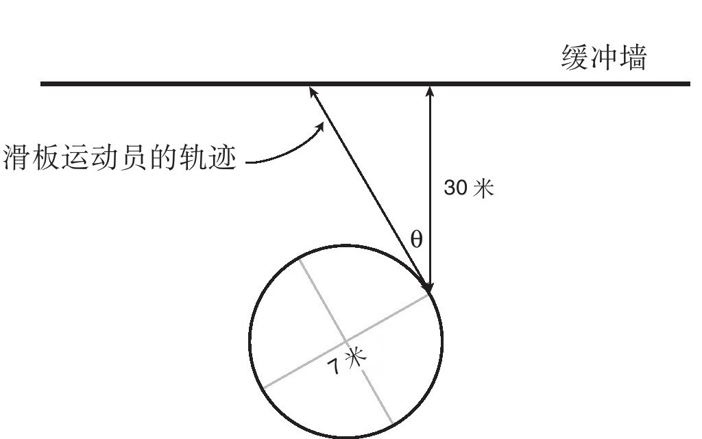
解答过程如下：
首先需要计算出滑板运动员离开圆形平台后的飞行距离，我们在下页图中用线段AB表示这段距离。
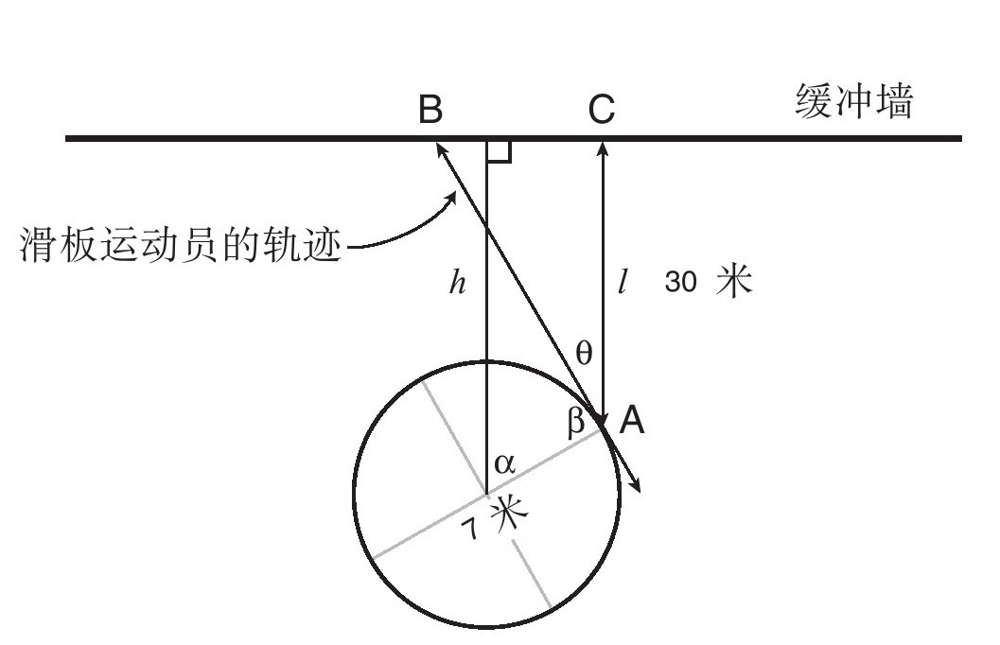
为了求得这段距离，我们需要运用直角三角形的性质计算得到∠θ的值。为了便于计算，过圆形平台的中心向缓冲墙做垂线h使其与墙面构成90°角。由于滑板运动员的起跳方向是2点钟方向，即占一圈比例的1/6，所以∠α=360°/6=60°。因为滑板运动员的滑行路径与圆形平台2点钟方向的位置相切，所以∠β=90°。由两平行线h和l间同旁内角互补得到：α+β+θ=180°，计算得到∠θ=30°。这也就表明△ABC是由30°、60°、90°角所构成的直角三角形，运用30°直角三角形邻边及斜边的数量关系得到：
同理可得：
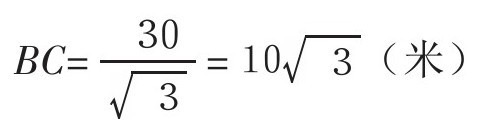
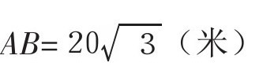
现在我们知道了飞行员从离开圆形平台到墙面的距离了。下一步就需要知道这位滑板运动员的滑行速度了。我们知道圆形平台转一圈的时间是6秒，那么滑板运动员跟随圆形平台运动一周所走的路程为：
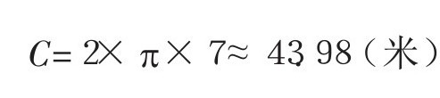
因此滑板运动员离开圆形平台时的速度为43.98/6≈7.330（米/秒）。
根据：
时间=路程/速度
因此滑板运动员到达墙面的时间为：
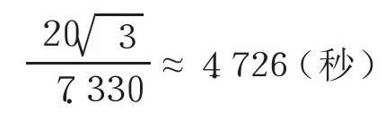
这道题目的难点在于棋盘上所有尺寸大小不同的方格都要考虑到，从尺寸最小的1×1方格，到互有重叠的尺寸为2×2的方格，一直到以棋盘作为整体的大方格，尺寸为8×8。
遇到这种类型的题目，我们需要通过分组的方式来进行思考。其中的一种分组方式就是我们要将所有尺寸的方格分类并分别计算数量。因此让我们从尺寸为1×1的方格开始，在棋盘上共有8行8列，所以共有64个尺寸为1×1的方格。下一步我们来找出所有尺寸为2×2的方格，这就可能会有一定难度，因为它们的重叠方式正如下图中两个黑色方格重叠在一起的情况：
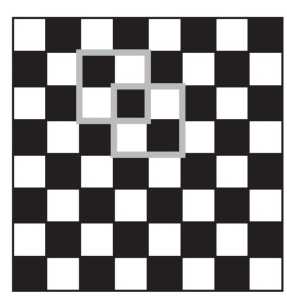
虽然方格存在相互重叠，但是每个尺寸的方格都有各自独立的中心点。因此我们就找到了一种简单的计算重叠方格数量的方法，那就是在其中心标注1个圆点，之后记录一共标有多少个圆点，下面是一些方格中心点的标注示意图：
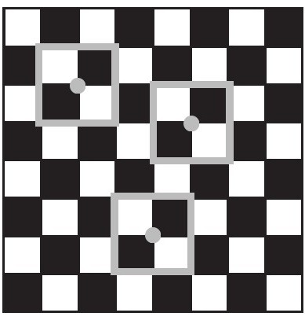
我们将所有尺寸为2×2的方格中心点标记出来，得到了一组点集：
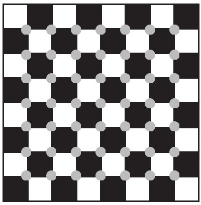
我们注意到这是一个7行7列的点集，因此共有49个尺寸为2×2的方格。
我们可以用同样的方法来计算尺寸为3×3的方格数量，重复上述步骤在方格中心做出标记，就像下图中所示那样：
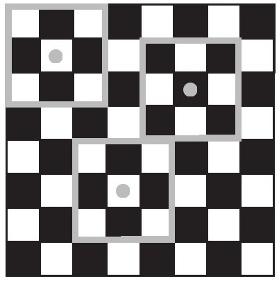
当我们把所有尺寸为3×3的方格中心点全部标记出来后，得到下面的图示：
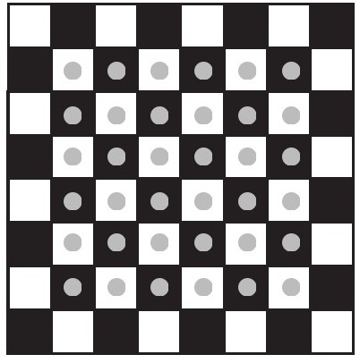
这是一个6×6的点集，因此共有36个尺寸为3×3的方格。以此类推，我们可以计算出4×4、5×5的方格总数……所有尺寸的方格总数计算如下：
82+72+62+52+42+32+22+1=204
这样的方法适用于计算任何尺寸大小的棋盘数量。我们归纳的结论是：在n行n列的棋盘上，尺寸为1×1的方格数量为n2个，尺寸为2×2的方格数量为（n-1）2个，以此类推，最后所有尺寸的方格总数为：
n2+（n-1）2+（n-2）2+……+32+22+12
表达出
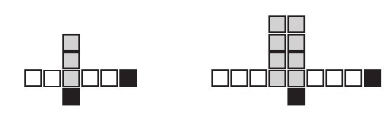
解答：
解这道题的好方法之一就是分析图形中各部分的变化趋势。具体做法是这样的：从图形上来观察，左边白色方块的部分随着图像的变化，每一次都会增加1个方块，当然这对于图形右侧的方块部分同样适用。图形最左侧的以及最底部的黑色方块不随图形的变化而变化。由灰色方块所组成的长方形区域随着图形的每一次变化，长和宽都会增加1个方块的长度。为了获得最终的表达式，我们需要对每幅图形进行编号，我们将第一幅图命名为“n=1”，第二幅图命名为“n=2”。因此现在我们可以去思考第n幅图共有多少个方块。图形左侧的白色方块与图形右侧的白色方块都会比序数n多出1，所以图形两侧白色方块的表达式都为（n+1）。图形底部与最右侧的黑色方块数量总是1个，不论序数n如何变化，因此它们的个数可以分别用常数1来表示。最后在灰色方块所组成的长方形区域中，其宽度为序数n，而长度总比序数n多出2个单位，也就是（n+2）。因此灰色方块的数量可以用长方形的长和宽来表示，其表达式为n（n+2）。我们由此推导出第n幅图的方块总数为：
（n+1）+（n+1）+1+1+n（n+2）
=n+1+n+1+1+1+n2+2n
=n2+4n+4
有趣的是：上面的代数表达式恰好是一个完全平方数，即（n+2）2，这也就意味着每一幅图中的方块总数可以用一个完全平方数来表达。请试着再回忆一遍我们是如何一步步推导出来的，这将会给我们的解题方法增添新思路。
Helen骑自行车以30千米/小时的速度行驶了1小时，然后又以15千米/小时的速度行驶了2小时，那么Helen这次旅程的平均速度是多少？
解答：
“平均速度”的题目最容易设陷阱，因为它可以被理解成不同的含义。比较通俗的理解就是：如果你以恒定速度前进，那么你在相同时间内完成相同路程的速度有多快？根据这样的理解，你自然会计算出总路程和总时间，那么平均速度就等于总路程/总时间。具体到这个题目，Helen在第1小时内行进了30千米，而在第2个小时和第3个小时总共行驶了15×2=30千米。所以总路程=30+30=60（千米）。总时长=1+2=3（小时）。所以平均速度=总路程/总时间=60/3=20（千米/小时）。
1.下图是一个长方形，边长分别为2x+4和6。
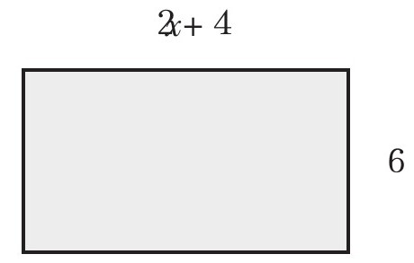
a.求出该长方形的周长，如果可能的话请将答案化简。
解答：
长方形周长是4条边之和，它们的边长分别是2x+4，6，2x+4，6。因此长方形周长等于
2x+4+6+2x+4+6=4x+20
b.求出该长方形的面积，具体要求同问题a。
解答：
长方形面积等于长方形的长与宽的乘积，因此长方形面积等于
6（2x+4）=12x+24
c.画出另外一个长方形，使其面积与问题b中的面积值相等，但是该长方形的长与宽不能与题干中的条件相同。
解答：
解答这道题目有很多种方法。其中的一种方法就是将宽度变为原来的2倍，长度变为原来的1/2。
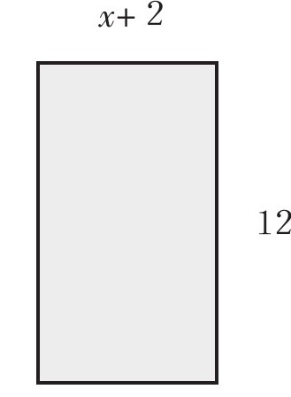
2.解下列方程：
a.5x-3=101
解答：
5x=101+3（方程两边同时加3）
5x=104
x=20.8（方程两边同时除以5）
b.3x-1=2x+5
解答：
3x-1=2x+5
3x-2x=5+1（方程两边同时减2x并加1）
x=6（合并同类项）
在这项教学任务中，学生们需要计算阶梯模型高度从1，到2，再到3……所需要的方块总数，并尝试计算当阶梯模型高度为10的时候所需要的方块总数，最后需要求出方块总数和阶梯模型高度的代数表达式。根据学生们的实际需要，老师为学生们准备了满满一盒子的连接方块供他们使用。
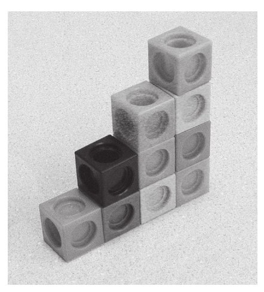
（高度为4的阶梯模型所需方块总数=4+3+2+1=10）
解答：
有许多种方法来分析方块总数随阶梯模型高度的变化趋势。其中一种相对优化的算法就是设想将两种同样高度的阶梯模型相互对接，如右图所示：
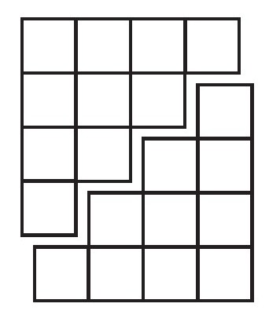
将两组相同的阶梯模型对接后形成了尺寸大小为4×5的长方体。由于我们把它们对接在一起，根据方块总数，我们可以求出原来一组阶梯模型中方块数量等于（4×5）/2=10。以此类推，将两组n级阶梯模型对接在一起组成了尺寸大小为n（n+1）的长方形。由于是两组阶梯模型对接到一起，所以原来一组阶梯模型的方块总数为n（n+1）/2。这也被称为第n个三角数。因为阶梯模型的外形与三角形颇为相似，所以运用这个方法，我们可以计算得到高度不同的阶梯模型所需方块总数。比如高度为10级的阶梯模型（n=10）共有10（10+1）/2=55个方块。高度为100级的阶梯模型共有100（100+1）/2=5050个方块。
关于1到100的数字求和还个有趣的故事：著名数学家卡尔·高斯小时候，班上的数学老师给学生们出了道数学题，让他们计算从1到100相加之和等于多少，高斯用100（100+1）/2这样的计算方法得出了答案。你知道这种求和方法的数学原理是什么吗？
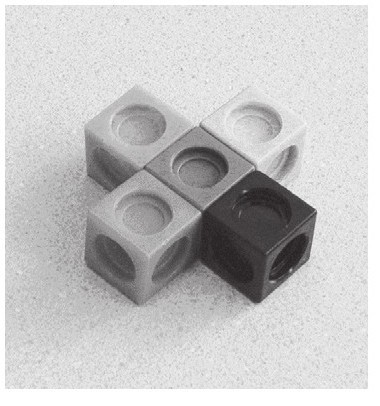
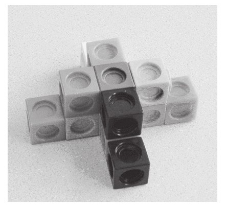
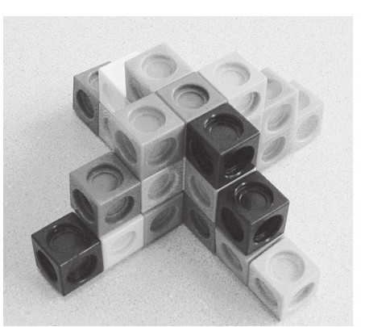
解法：
Alonzo研究的问题跟之前的阶梯模型问题很相近，只不过在这个问题中阶梯模型会以一条边为基准向4个方向延伸。而且我们有很多种方法来计算这种形状的阶梯模型共有多少个方块。其中一种就是沿用上面的解决方法。Alonzo设计的阶梯模型向4个方向延伸，也就是说，可以用上述的方法计算出构成每组阶梯模型的方块总数后再乘上4，并加上连接4个方向的中心对称轴的方块个数。因此这种形状阶梯模型的方块总数是4n[（n+1）/2]+n。在这个代数表达式中，前一项代表4组阶梯模型的方块数量总和，其中n代表作为中心对称轴的方块数量。后一项n代表图中的阶梯模型高度，在第1幅图中阶梯模型的高度是1，在第2幅图中阶梯模型的高度是2，以此类推，在第n幅图中阶梯模型的高度是n，表达式的化简过程如下：
4n[（n+1）/2]+n
=2n（n+1）+n
=2n2+2n+n
=2n2+3n
当你得出关于这个问题的一般化表达式的时候，要用你得到的表达式结果验算一些简单实例。那么你能否用上面得到的表达式来验证Alonzo在图片中的举例吗？你还能用其他的分组方式来得出同样的数学表达式吗？
在这个“圈牛问题”中，学生们需要测算围栏的长度来应对持续增加的母牛数量，并设置围栏数量作为参考来表达。
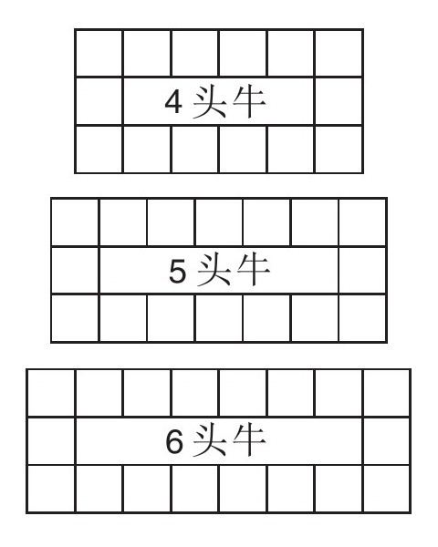
解法：
我们有很多种方式来审视这个问题，就像书中介绍的其他题目一样。其中的一种方法就是先将围栏各边的数量计算出来，之后再加上4个角落的围栏方格数量。值得注意的第一件有趣的事就是，上下两边的围栏方格数量和母牛的数量是相等的，并且图中左边和右边的围栏数量总是1。因此第1幅图中的围栏总数是4+4+1+1+4=14，算式中的前两个4代表图中上方和下方的围栏数量，两个1代表围栏两侧的围栏数量，最后一个4代表4个角落的方格数量。下一幅图根据同样的算法计算得到5+5+1+1+4。最后，总结上升到一般化表达式，围栏总数应该表示为：n+n+1+1+4条边，或者总共2n+6个围栏。
给你一个5升的水缸，一个3升的水缸，还有无限量的水，你如何才能准确计量出4升水？
解答：
关于这个问题有很多种解法，其实方法都多到数不过来，下面就来说一种方法：将5升的水缸盛满，然后将5升水缸中的水倒入3升水缸中，直至将其倒满。那么现在5升水缸中还剩余2升水。将3升水缸中的水倒空后，把5升水缸中的水倒入到3升水缸，再将5升的水缸盛满，将5升水缸中的水继续倒入3升水缸中，直至将3升的水缸倒满。因为在3升的水缸中已经留有了2升水在里面，那么只能从5升水缸中再向其倒入1升水，因此在最后5升的水缸中正好就留下了4升水。
如果上述讲解还不能让学生理解的话，那么我们列举出每一步水缸的倒水过程，以便于看清每一步水缸倒水的细节：
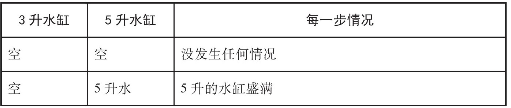
续表）
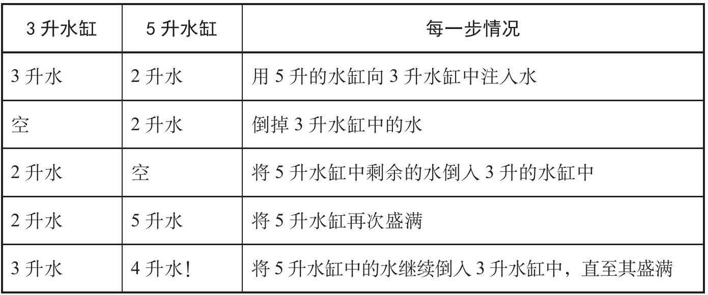
当然我们还可以继续思考一个有趣的问题：这种解题方法的步骤是最少的吗，或者说还更快的方法吗？此外还有一个跟进问题：是否存在这两个水缸测不出的水量呢？
一只兔子掉入深度为30米的枯井中。它决定靠自己的力量爬出枯井。当它开始向上爬的时候，它发现每当自己向上爬3米的时候，就会向下滑落2米（听起来确实运气不够好）。令人遗憾的是，它这一天就只能停留在自己滑落后的地方，等第二天再爬。那么按照这样的情况，它从井底到爬出井口需要用多长时间？
解答：
这是一道典型的陷阱迷惑题。即使你已经发现潜在的陷阱，依然还是很容易犯下错误。当然“有利”的一面就是，我们其实把兔子攀爬或滑落的过程进行简化。我们不用去分析兔子每天向上爬3米和向下滑2米这个事实，只需要考虑的是兔子实质上相当于每天向上爬1米，而这也就想当然地得到兔子需要30天爬出枯井的答案，因为它每天实质上向上爬行1米。但是兔子在最后的时候向上爬3米就能逃脱出井口时，就不会再向下滑2米了。因此兔子的自救时间可以缩短2天，也就是说它仅仅用28天就能成功脱险。那么你还能想到别的解释方法来说明兔子为何在实际上只用了28天的时间吗？
一天早晨，在太阳刚刚升起的时候，一位和尚离开了自己的寺庙去攀登一座高山。山路崎岖狭窄，台阶不足1米宽。在崎岖的山路上面可以瞥见山顶。和尚以不同的行进速度向上攀爬，偶尔会停下来休息，吃一些自带的脱水食物，他最终在日落之前到达了山顶。在经过了几天的斋戒之后，他决定沿着原路返回，依然是从日出时出发，以不同的行进速度向山下走，中途会时不时停下来休息，最后在日落前到达了自己的寺庙。现在需要证明，这位和尚在往返行程中在同一时点通过了某处的同一地点。
解答：
这个经典问题被称为“不动点定理”问题的简化版。如果你对此感兴趣的话，事实上还有其他很多相似的情况！解答这一问题最巧妙的一种方法是画出和尚的行程路线图，以时间作为x轴，以和尚所在位置作为y轴。所以他第一天的旅程大致看起来像下面这样：
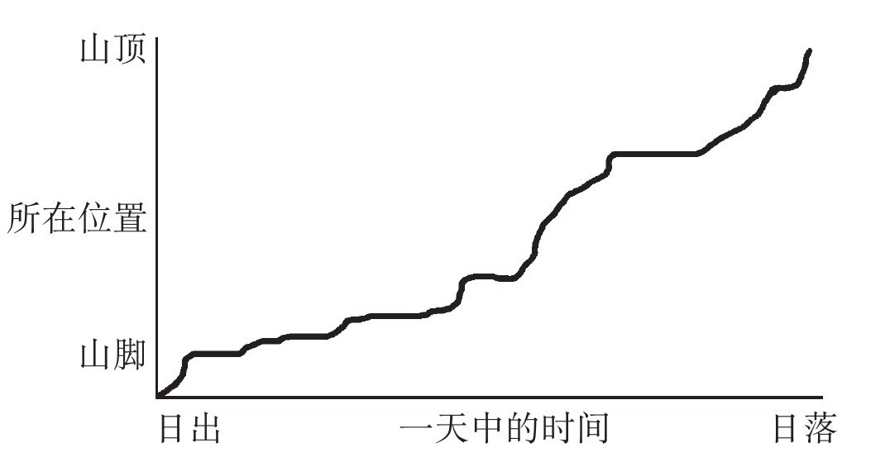
然后在相同的图像上面我们画出他下山的路线：
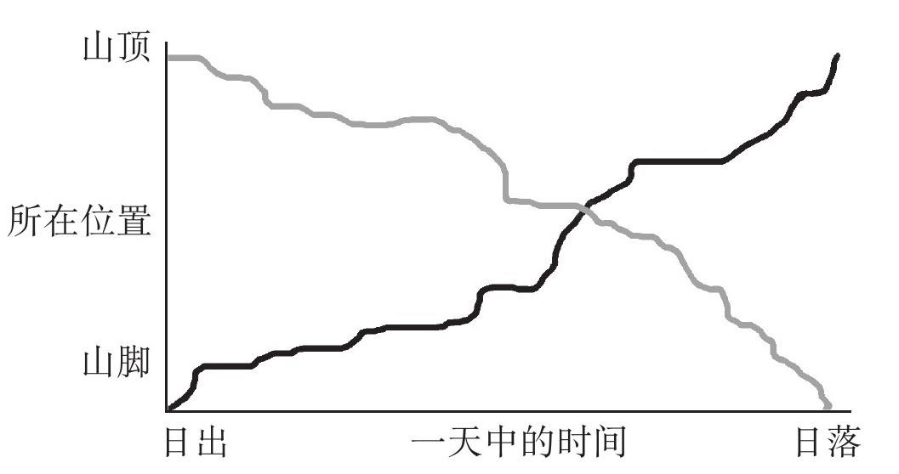
很显然，两种路径看上去各不相同，因为他会选择在不同的时间加快速度或放慢速度。然而，因为第1条路线是从左下角一直攀升到右上角，第2条路线是从左上角回落至右下角，这就意味着两条线会在某点相交。然后正如你们所看到的，图像上确实在某点相交了。这一交点就表明了该点是两天往返中所对应的时间以及和尚所经过的相同位置。
解答：
（请参考前面相关题目的解答过程）
尝试采用各种运算方式，利用4个4来得出0～20之间的数字（可以使用乘法、除法、加法、减法、乘方或者平方根运算），每个4只可以使用1次，例如：
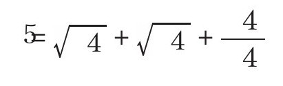
那么在0～20之间有多少数字满足这样的条件呢？
解答：
有一些数字很容易就可以用4个4运算得到，但是有些数字的运算会更难一些，下面是关于1到20的解答方法：
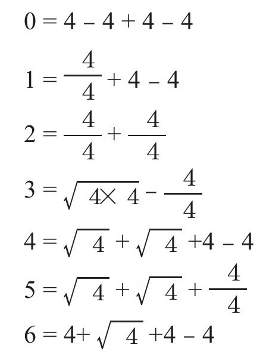
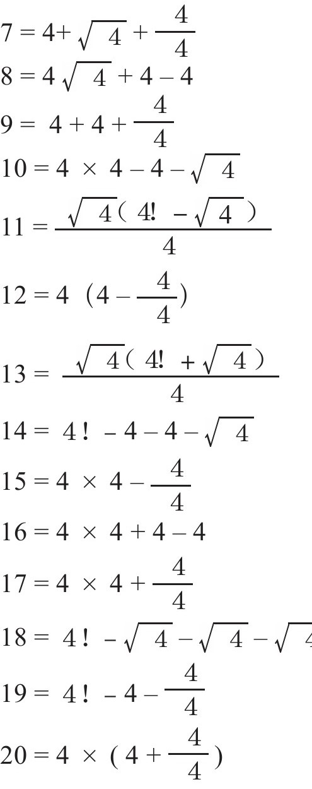
需要注意的是，在一些解题过程中，我们使用了分式表达法，并且在一些数字后面标记了“！”。这个符号代表的算法意义是每个正整数与比它小的所有正整数的乘积（即阶乘）。因此4！=4×3×2×1=24。对于我用分数所得到的计算结果，你能够想到其他的一些不同的计算方法吗？
这是一个两人的游戏，规则是这样的：
1.从0开始；
2.1号选手在此基础上加1或2；
3.2号选手在1号选手得数的基础上加1或2；
4.两位选手交替加上1或2；
5.最先得到20的人就获得胜利。
现在来看一看你是否能想出一个获胜方案。
解答：
有一件事情你要知道，如果你能抢先算出17，你就会是最终的赢家。这是因为不论你的对手选择哪个数字，也就是说不管是1还是2，在下一轮时无论怎样计算你都会得出20。所以，计算得到17也就相当于你会在最后抢先计算得到20。当然我们可以顺着这个思路继续做减法。这里要说的是，17是你一定要掌握在手的数字，因为它和20只相差3，当你算得17后，无论对手采取怎样的应对措施，你总会比他多出一次选择机会。所以我们的技巧就是遵循这个规律，紧紧抓住“3”这个数字。以此类推，当你得到14时，这也预示着你将会取得最终的胜利，因为不论你的对手策略如何，你都能在下一轮时得出17，而下一步你就可以用这条策略最终计算得出20了。同理我们得到了11、8、5……每个数字之间都相差3。
现在我们回过头来：假如你是先开口，那么你的获胜策略又是什么？如果你后开口，又应该采取何种策略呢？如果你愿意尝试的话，你可以选择采用多种多样的方法去进行不同的尝试，然后找出最佳策略。
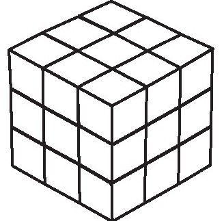
在一个边长为3的立方体外侧涂满红色。如果从中取出一个边长为1的立方体，那么总共有多少个立方体是三面都有颜色的？有多少个是两面都有颜色的？有多少个是单面有颜色的？又有多少个是全没有颜色的？如果给你一个尺寸更大的立方体，你又应该怎样去做呢？
解答：
在3×3×3的立方体中，立方体的最内层中间的地方是一面颜色都不会涂的。只有6个立方体是单面涂颜色的，它们分别是外层六面正方形最中间的那个立方体。有12个立方体的两面涂了颜色，它们分别位于立方体的各条边上。有8个立方体的三面都涂有颜色，它们分别位于立方体的8个角上面。
从更一般的角度来讲，对于1个n×n×n的立方体而言，让我们想一想如何计算得到那些没有涂颜色的立方体个数。想象一下，将构成n阶立方体最外层的小方块移开后。你将会得到里面一层的立方体，但其每一维度的长度都会减少2，因为每一条边的两端都少了2个立方体。这样就会形成（n-2）×（n-2）×（n-2）的立方体，其体积是（n-2）3。对于单面涂有颜色的立方体，它们存在于每一面正方形的内部。根据同样的道理，那是一个（n-2）×（n-2）的正方形，在每一面都有（n-2）2个正方形，因此共有（n-2）×2个单面涂色的立方体。对于两个面都涂有颜色的立方体来讲，它们存在于大立方体的12条边上，但是在每条边上只有n-2个立方体满足该条件（想一想为什么），总共有12（n-2）个立方体。最后，不论这个立方体有多大，在其8个顶点处存在三面全是颜色的立方体，因此共有8个三面全是颜色的立方体。
将10粒豌豆分配到3个碗中共有多少种方法？尝试在每个碗中放入的豌豆数量不相等。
解答：
解这道题目的方法有许多。一种方法是假设共有11粒豌豆，然后看一看在第一个碗里可以放多少粒豌豆（想一想为什么是11粒豌豆而不是10粒），然后再计算剩下的两个碗中豌豆的分配方案。我建议尝试着这样去做一做，这样更便于你在计算与分析中，加深对题目的理解。其实一旦你习惯了这样的算法，你就会发现这其实是快捷而高效的：
算法演示：
想一想把豌豆用点来表示，排成一行，但是有2粒很特殊：
……
为什么会有2粒多余的呢？让我们来想一想你的任务是用符号x来替换2粒豌豆，就像下面这样：
··x……x……
或者像这样：
……x……
甚至像这样：
……x x……
这些x起着标识哪些豌豆放在第几个碗中的作用，它们以下面这种途径发挥作用：在碰见第1个x前，就把豌豆往第1个碗里放；在碰到第2个x前，将豌豆再往第2个碗里放；最后剩下来的豌豆再放入第3个碗中去。举例说明，在第2幅图中，有2粒豌豆放入第1个碗中，有3粒豌豆放入第2个碗中，有5粒豌豆放入第3个碗中；在第3幅图中，有7粒豌豆放入第1个碗中，有1粒豌豆放入第2个碗中，有2粒豌豆放入第3个碗中；在第4幅图中，有4粒豌豆放入第1个碗中，第2个碗中没有放入豌豆（想一想为什么），有6粒豆子放入第3个碗中。
因此，每一种用x来替换12粒豌豆中的2粒豌豆的方式都是将10粒豌豆分配到碗中的好方法。如果你能计算出有多少种用x来替换2粒豌豆的方法，也就相当于知道了这10粒豌豆的分配方案。那么我们有多少种挑选出第1粒豌豆的方法呢？很显然有12种，因为豌豆你可以随意挑选。由此我们也就进一步得出了选出第2粒豌豆的方法有11种，因为在此之前已经选出了1粒豌豆了。因此共有12×11=132种挑选出第1粒及第2粒豌豆的分配方案。但是需要注意，就是每当我们挑选出每一组x的时候，都有2种方法，这是因为你在挑选的过程中会牵扯到顺序问题，即在132种方案中包含对于每个x的重复挑选，需要将其除以2。因此用x来替换2粒豌豆的方法，也就是把10粒豌豆分配到3个碗中的方法，共有（12×11）/2=66种。
对于数字3，一共有4种分解方法来表示：
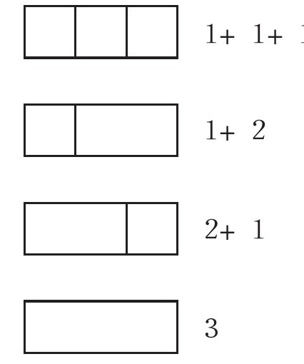
或者说你认为1+2和2+1是相同的，也就是说实际上有3种分解数字3的方法。
请说一说你自己不同的分解方法。
解答：
关于这道题，你需要依靠自己的能力来解决！对于总结中任意数字共有多少种分解方法的一般表达式是目前依然悬而未决的问题。所以让我们一起来填补数学世界的空白吧！